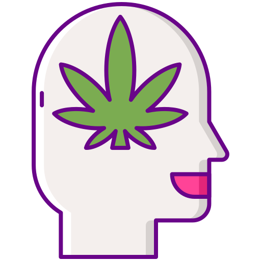

<!DOCTYPE html>
<html lang="es">
<head>
	<meta charset="UTF-8">
	<title>WhitUs · Ayuda</title>
	<link rel="icon" type="image/png" href="imagenes/icono.png">
	<link rel="stylesheet" href="css/estilos.css">
	<link rel="stylesheet" href="css/slider.css">
	<link rel="stylesheet" href="css/animate.css">
	<link rel="stylesheet" href="css/secciones.css">
	<link rel="stylesheet" href="css/redes.css">
	<script src="https://use.fontawesome.com/502b7294a9.js"></script>
</html>
</head>

<body>
<div class="red">
	<div id="facebook"><a href="#" target="none" class="fa fa-facebook"></a></div>
	<div id="youtube"><a href="#" class="fa fa-youtube-play"></a></div>
	<div id="twitter"><a href="#" class="fa fa-twitter"></a></div>
	<div id="correo"><a href="#" class="fa fa-envelope"></a></div>
</div>
<header>
<!-- aquí comienza nuestro menu -->
	<div class="ancho">
		<div class="logo">
			<p><a href="index.html">WhitUs</a></p>
		</div>
		<nav>
			<ul>
				<li><a href="index.html">Inicio</a></li>
				<li><a href="enfermedades.html">Ayuda</a></li>
				<li><a href="ideas.html">Objetivos</a></li> 
				<li><a href="acercade.html">Contacto</a></li>
				<li><a href="sign-in.html">Iniciar sesión</a></li>
			</ul>
		</nav>
	</div>
</header>

<div class="ancho-letras">
	<div class="letras-slider">
			<h1 class="animated zoomIn">WhitUs:<br> contigo, Para ti.</h1>
			<p class="animated slideInUp">Si necesitas ayuda o apoyo emocional estás en el lugar correcto. Queremos que salgas adelante, que superes este problema por el que estás pasando y que nos cuentes, con total confiabilidad, esas cosas que te perturban, que te quitan el sueño y que no te dejan continuar. La salud psicológica es de suma importancia y nosotros no solo te apoyaremos a mejorarla, sino también a sanarla.<br><br>
			Te invitamos a que hagas parte de la maravillosa familia de WhitUs.</p>
	</div>
</div>
<div id="particles-js"></div>
<section class="wap">
	<section class="bienvenidos"> 
		<h2>Salud Mental</h2>
		<h3 style="text-align: justify;">
			La salud mental incluye nuestro bienestar emocional, psicológico y social. Afecta la forma en que pensamos, sentimos y actuamos cuando enfrentamos la vida. Además ayuda a determinar cómo manejamos el estrés, nos relacionamos con los demás y tomamos decisiones. También es, en términos generales, el estado de equilibrio entre una persona y su entorno socio-cultural que garantiza su participación laboral, intelectual y de relaciones para alcanzar un bienestar y calidad de vida.<br><br>Comúnmente, se utiliza el término “salud mental” de manera análoga al de “salud o estado físico”, definiendo a la salud mental de la siguiente manera:"la salud mental abarca una amplia gama de actividades directa o indirectamente relacionadas con el componente de bienestar mental incluido en la definición de salud que da la OMS: <em>«un estado de completo bienestar físico, mental y social, y no solamente la ausencia de afecciones o enfermedades»​".</em> Sin embargo, lo mental alcanza dimensiones más complejas que el funcionamiento meramente orgánico del individuo. La salud mental ha sido definida de múltiples formas por autores de diferentes culturas. Los conceptos de salud mental incluyen el bienestar subjetivo, la autonomía y potencial emocional, entre otros. Sin embargo, las precisiones de la Organización Mundial de la Salud establecen que no existe una definición oficial sobre lo que es salud mental y que cualquier definición estará siempre influenciada por diferencias culturales, suposiciones, disputas entre teorías profesionales, la forma en que las personas relacionan su entorno con la realidad, entre otras cuestiones.</h3><br><br>
		
			<h2>¿Qué son las enfermedades mentales?</h2> <br>
			<h3 style="text-align: justify;">			
			Son una amplia variedad de afecciones que debilitan el estado de ánimo, el pensamiento y el comportamiento, además de afectar nuestra manera de pensar, nuestro humor, nuestro funcionamiento en el día a día y la capacidad para relacionarnos. Pueden ser ocasionales o duraderas (crónicas).<br><br></h3>
			
			<h2>¿Cuáles son algunos tipos de enfermedades mentales?</h2>
			<h3 style="text-align: justify;">
				Existen muchos tipos diferentes de trastornos mentales. Algunos comunes incluyen:
			  <br>
			  <br>
			   <ul style="text-align: justify;">
				  <li>Trastornos de ansiedad, incluyendo trastorno de pánico, trastorno obsesivo-compulsivo y fobias</li>
				  <li>Depresión, trastorno bipolar y otros trastornos del estado de ánimo</li>
				  <li>Trastornos de la alimentación</li>
				  <li>Trastornos de la personalidad</li>
				  <li>Trastorno de estrés post-traumático</li>
				  <li>Trastornos psicóticos, incluyendo la esquizofrenia</li><br><br>
			   </ul>
			</h3>
			<h2>¿Qué causa los trastornos mentales?</h2>
			<h3 style="text-align: justify;">No hay una sola causa de la enfermedad mental. Varios factores pueden contribuir al riesgo de sufrirla, por ejemplo:

				Sus genes y su historia familiar, su experiencia de vida, como el estrés o si ha sufrido de abuso, en especial durante la infancia, factores biológicos como desequilibrios químicos en el cerebro, una lesión cerebral traumática, la exposición de una madre a algún virus o productos químicos durante el embarazo, consumo de alcohol o drogas, tener una enfermedad seria como el cáncer, tener pocos amigos y sentirse solo o aislado, entre otros.</h3><br><br>
			<h2>Importancia de la Salud mental</h2>
			<h3 style="text-align: justify;">
			  La salud mental es importante porque puede ayudarnos a: 
			  <br>
			  <br>
			   <ul style="text-align: justify;">
				  <li>Enfrentar el estrés de la vida.</li>
				  <li>Estar fisicamente saludable.</li>
				  <li>Tener relaciones sanas.</li>
				  <li>Contribuir en forma significativa a su comunidad.</li>
				  <li>Trabajar productivamente.</li>
				  <li>Mantener una buena salud física.</li>
			   </ul>
		    </h3>
	</section>  
</section><br><br>
    <section class="banner-1">
	<h3>Haz parte de esta maravillosa familia...<a href="sign-in.html">¡Únete! <i class="fa fa-arrow-right" aria-hidden="true"></i></a></h3>
	</section><br><br>

			<section class="contenedor-columnas">
				<h2 style="text-align: center;">¿En qué necesitas ayuda?</h2><br>
				<div class="columnasx4"> 
					
					<h4><a href="enfermedades/depresion.html" style="text-decoration:none">Depresión</a><br><br><!--METAUTE--></h4>
				</div>
		
				<div class="columnasx4">
					
					<h4><a href="enfermedades/ansiedad.html" style="text-decoration:none">Ansiedad</a><br><br><!--HECTOR--></h4>
				</div>
		
				<div class="columnasx4">
					
					<h4><a href="enfermedades/insomnio.html" style="text-decoration:none">Insomnio</a><br><br><!--HECTOR--></h4>
				</div>
				
				<div class="columnasx4">
					
					<h4><a href="enfermedades/estres.html" style="text-decoration:none">Estrés</a><br><br><!--HECTOR--></h4>
				</div>
			</section>
			<section class="contenedor-columnas">
				<div class="columnasx4"> 
					
					<h4><a href="enfermedades/panico.html" style="text-decoration:none">Pánico</a><br><br><!--ANGÉLICA--></h4>
				</div>
		
				<div class="columnasx4">
					
					<h4><a href="enfermedades/tecnologia.html" style="text-decoration:none">Adicción tecnológica</a><br><br><!--MANOLO--></h4>
				</div>
		
				<div class="columnasx4">
					
					<h4><a href="enfermedades/drogas-alcohol.html" style="text-decoration:none">Adicción a drogas y alcohol</a><br><br><!--ANGÉLICA--></h4>
				</div>
				
				<div class="columnasx4">
					
					<h4><a href="enfermedades/estres-post.html" style="text-decoration:none">Estrés postraumatico</a><br><br><!--ANGÉLICA--></h4>
				</div>
			</section>
			
	<br>
	<br>
	<br>
	<br>
	<br>

<section class="banner-1">
	<h3>¿Quiéres conocer más acerca de nuesto proyecto? No esperes...<a href="sign-in.html">Inicia sesión! <i class="fa fa-arrow-right" aria-hidden="true"></i></a></h3>
</section>

<footer id="pies">
	Derechos Reservados WithUs &copy;2020-2021
</footer>

<script src="js/particles.js"></script>
<script src="js/app.js"></script>
<script src="https://ajax.googleapis.com/ajax/libs/jquery/3.1.0/jquery.min.js"></script>
<script src="js/alto.js"></script>
</body>
</html>